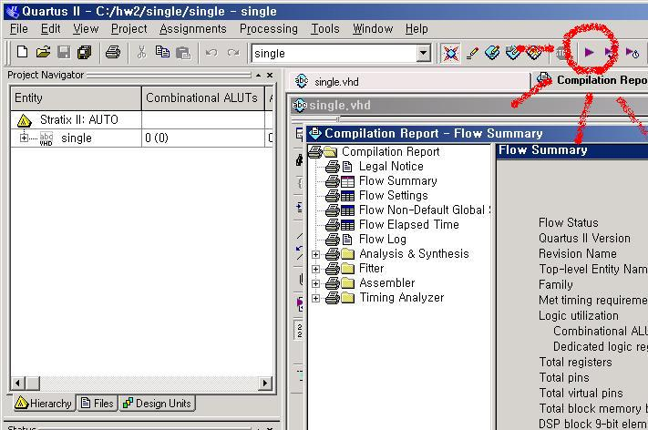

1. Quartus setup
2. Download pre-builded block
3.Make project
add all vhd files
---------------------------------------- 1 ------------------------------------------------
4. new file for top entity
5. write source
source ex)
library ieee; -- includes
use ieee.std_logic_1164.all;
use ieee.std_logic_arith.all;
use ieee.std_logic_signed.all;
use ieee.numeric_std.all;
entity single is -- top entry ports
port (
pReset : in std_logic;
pClock : in std_logic;
pPC : out std_logic_vector(31 downto 0);
...
pMR : out std_logic;
pIM : out std_logic_vector(31 downto 0);
pBranch : out std_logic
);
end single;
architecture behavior of single is -- behavior for top entry
------------------------------------- define components
component eAdd4
port (
pIn : in std_logic_vector(31 downto 0);
pOut : out std_logic_vector(31 downto 0)
);
end component;
component eALU
port(
pOperator :in std_logic_vector(5 downto 0);
pOperation :in std_logic;
pBranch :in std_logic;
pIn1 :in std_logic_vector(31 downto 0);
pIn2 :in std_logic_vector(31 downto 0);
pBranch_out :out std_logic;
pOut :out std_logic_vector(31 downto 0)
);
end component;
...
component eSignExtend
port(
pIn :in std_logic_vector(15 downto 0);
pOut :out std_logic_vector(31 downto 0)
);
end component;
-------------------------------- define signals
signal sCPC : std_logic_vector(31 downto 0);
signal sR : std_logic;
...
signal sMEM : std_logic_vector(31 downto 0);
signal sWB : std_logic_vector(31 downto 0);
-------------------------------- begin behavior
begin
-------------------------------- output port
pIM < =sIM;
pPC < =sCPC;
pNextPC < =sNPC;
...
pMW<=sMW;
pMR<=sMR;
pBranch<=sB;
------------------------------- component connect
cPC : ePC
port map(
pIn=>sNPC,
pOut=>sCPC,
pReset=>pReset,
pClock=>not pClock
);
cMUX_PC : eMUX32
port map(
sAPC,
sBPC,
sBO,
sNPC
);
cMUX_S2orI: eMUX32
port map(
sRD2,
sIM,
sAS,
sALU_In2
);
...
cMUX_DST: eMUX5
port map(
sINS(20 downto 16),
sINS(15 downto 11),
sR,
sW
);
cSignExtend: eSignExtend
port map(
sINS(15 downto 0),
sIM
);
end behavior;
6. compile

7. simulation
1) make vector wave form file
2) make memory initialize file
3) instruction memory initialize
Translating assembly code into hexdecimal mechine code: use SPIM
4) data memory initialize
5) recompile
6) simulation start
7) simulation result